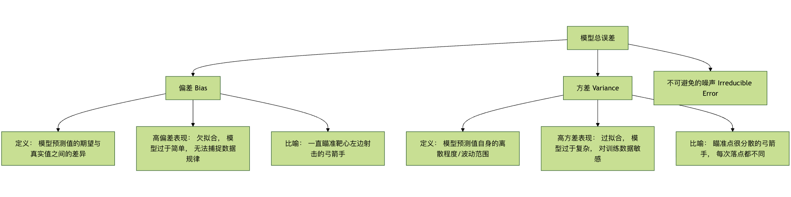

Regularización
Imagine que estamos aprendiendo a montar en bicicleta. Al principio, es posible que estemos muy nerviosos, agarrando el manillar con fuerza, con el cuerpo rígido, intentando recordar cada detalle del movimiento. Esta atención excesiva a los detalles y el intento de controlar perfectamente cada micro-movimiento se denomina en el aprendizaje automáticosobreajuste (overfitting)。
Nuestro modelo (como tú cuando empezabas) es demasiado complejo: memoriza perfectamente cada muestra de los datos de entrenamiento, incluso el ruido y las fluctuaciones aleatorias, lo que hace que se comporte mal y carezca de capacidad de generalización cuando se enfrenta a datos nuevos y no vistos (como salir a montar en bicicleta en la realidad).
La regularizaciónes la técnica central creada para resolver este problema. Su idea principal es:"enfriar" el entusiasmo de aprendizaje del modelo, evitar que se obsesione con los detalles y así mejorar su capacidad de adaptación en nuevos entornos. En términos sencillos, la regularización añade un término de penalización adicional a la función objetivo (función de pérdida) durante el entrenamiento del modelo para limitar su complejidad y evitar que dependa en exceso de patrones específicos de los datos de entrenamiento.
Este artículo te ayudará a comprender en profundidad los principios de la regularización, los métodos comunes y su aplicación en la práctica de la ingeniería.
Conceptos básicos: equilibrio entre sesgo y varianza
Antes de profundizar en la regularización, necesitamos entender las dos fuentes principales de error en los modelos de aprendizaje automático:sesgo (bias) 和 varianza (variance). Esto nos ayuda a comprender qué es exactamente lo que la regularización ajusta.

- El sesgomide elerror sistemáticodel propio modelo. Un sesgo alto significa que el modelo es demasiado simple y ni siquiera ha aprendido bien los patrones básicos de los datos de entrenamiento (subajuste / underfitting).
- La varianzamide lasensibilidad del modelo a las fluctuaciones aleatoriasde los datos de entrenamiento. Una varianza alta significa que el modelo es demasiado complejo y ha aprendido el ruido de los datos de entrenamiento como si fuera una regla (sobreajuste).
Nuestro objetivo es encontrar unpunto óptimo de equilibrio entre sesgo y varianzaque minimice el error total. La regularización es un medio eficaz para mejorar el rendimiento general de generalización del modelo alaumentar un poco el sesgo (haciendo que el modelo sea ligeramente más simple) para reducir significativamente la varianza.
Regularización L1 y L2
El método de regularización más clásico consiste en añadir directamente a la función de pérdida un término de penalización basado en los pesos del modelo. Según la forma de calcular el término de penalización, se divide principalmente en regularización L1 y L2.
Cambio de la función de pérdida
Función de pérdida sin regularizar (tomando el error cuadrático medio MSE como ejemplo):Loss = (1/n) * Σ(真实值 - 预测值)²
Función de pérdida tras añadir el término de regularización:Loss_正则化 = Loss + λ * Penalty(权重)
donde:
λλ (lambda) es elcoeficiente de intensidad de regularización, un hiperparámetro mayor que 0. Controla la fuerza de la penalización.λCuanto mayor sea, más fuerte será la penalización sobre la complejidad del modelo y más simple se volverá este.Penalty(权重)es el término de penalización, y su definición difiere entre L1 y L2.
Regularización L1 (Regresión Lasso)
- Término de penalización: la suma de los valores absolutos de todos los pesos del modelo.
- Fórmula：
Penalty = Σ|w_i|, dondew_ies el i-ésimo peso. - Función de pérdida：
Loss_L1 = Loss + λ * Σ|w_i|
Características principales y efectos：
- Selección de características: la regularización L1 tiende a producirmatrices de pesos dispersas (sparse), es decir, comprime directamente los pesos de muchas características poco importantes a0. Esto equivale a realizar automáticamente una selección de características: el modelo solo conserva las características más importantes.
- Interpretación geométrica: su restricción tiene geométricamente forma de "rombo" (en dos dimensiones). Es más fácil que la solución óptima toque la "esquina" de este rombo, y un punto en la esquina significa que algunas coordenadas son 0.
Ejemplo de código：
Ejemplo
from sklearn.datasets import make_regression
from sklearn.model_selection import train_test_split
# Generar datos simulados
X, y = make_regression(n_samples=100, n_features=10, noise=0.1, random_state=42)
X_train, X_test, y_train, y_test = train_test_split(X, y, test_size=0.2, random_state=42)
# Crear modelo de regularización L1 (Lasso), establecer la intensidad de regularización alpha (es decir, λ)
lasso_model = Lasso(alpha=0.1) # Cuanto mayor sea alpha, más fuerte será la penalización y más pesos serán 0
lasso_model.fit(X_train, y_train)
# Ver los coeficientes (pesos) del modelo y observar la dispersión
print("Coeficientes del modelo Lasso:")
for i, coef in enumerate(lasso_model.coef_):
print(f" Característica {i}: {coef:.4f}")
# Contar el número de pesos distintos de cero
non_zero_count = sum(lasso_model.coef_ != 0)
print(f"\n"Número de características con pesos distintos de cero: {non_zero_count} / {X.shape)
Salida:
Lasso 模型系数： 特征 0: 16.6855 特征 1: 54.0447 特征 2: 5.0302 特征 3: 63.5492 特征 4: 93.4587 特征 5: 70.5421 特征 6: 86.9569 特征 7: 10.2711 特征 8: 3.0697 特征 9: 70.7835 非零权重的特征数量： 10 / 10
Regularización L2 (Regresión Ridge)
- Término de penalización: la suma de los cuadrados de todos los pesos del modelo.
- Fórmula：
Penalty = Σ(w_i)² - Función de pérdida：
Loss_L2 = Loss + λ * Σ(w_i)²
Características principales y efectos：
- Decaimiento de pesos (weight decay): la regularización L2 tiende a hacer que todos los pesos seaproximen a 0, pero normalmente no sean iguales a 0. Reduce uniformemente todos los pesos, evitando que cualquier peso individual se vuelva demasiado grande.
- Mejora de problemas mal condicionados: para datos con multicolinealidad (alta correlación) entre características, la regresión lineal ordinaria puede ser inestable; la regularización L2 puede mejorar eficazmente este problema y hacer la solución más estable.
- Interpretación geométrica: su restricción tiene geométricamente forma de "círculo" (en dos dimensiones). Es más fácil que la solución óptima toque el "borde" del círculo, no una esquina.
Ejemplo de código：
Ejemplo
# Crear modelo de regularización L2 (Ridge)
ridge_model = Ridge(alpha=1.0) # alpha es λ
ridge_model.fit(X_train, y_train)
# Ver los coeficientes del modelo y observar el decaimiento de pesos
print("Coeficientes del modelo Ridge:")
for i, coef in enumerate(ridge_model.coef_):
print(f" Característica {i}: {coef:.4f}")
# Comparar las diferencias entre los coeficientes de Lasso y Ridge
print("\n"Comparación de coeficientes (Lasso vs Ridge):")
print("Característica | Coeficiente Lasso | Coeficiente Ridge")
print("-" * 35)
for i in range(len(lasso_model.coef_)):
print(f"{i:4d} | {lasso_model.coef_[i]:11.4f} | {ridge_model.coef_[i]:11.4f}")
Comparación resumida de L1 y L2
| Propiedad | Regularización L1 (Lasso) | Regularización L2 (Ridge) |
|---|---|---|
| Término de penalización | `Σ | w_i |
| Característica de la solución | Solución dispersa, muchos pesos son 0 | Solución densa, pesos cercanos a 0 pero no nulos |
| Función principal | Selección de características | Decaimiento de pesos， Solución estable |
| Forma geométrica | Rombo / poliedro | Círculo / esfera |
| Cálculo | Optimización más compleja (no diferenciable en todos los puntos) | Optimización simple (diferenciable en todas partes) |
| Escenarios de aplicación | Muchas características, y se considera que solo unas pocas son relevantes | Todas las características pueden contribuir, o existe multicolinealidad |
Elastic Net (Red Elástica)
Elastic Net es una solución intermedia entre la regularización L1 y L2, ya que incluye ambos términos de penalización.Loss_ElasticNet = Loss + λ1 * Σ|w_i| + λ2 * Σ(w_i)²
Combina la capacidad de selección de características de L1 y la estabilidad de L2, y es adecuada para casos con dimensiones de características muy altas y con correlación entre ellas.
Ejemplo
elastic_model = ElasticNet(alpha=0.1, l1_ratio=0.5) # l1_ratio controla la proporción de mezcla entre L1 y L2
elastic_model.fit(X_train, y_train)
Otras técnicas de regularización
Además de modificar directamente la función de pérdida, también existen métodos de regularización que cambian el proceso de entrenamiento o la estructura del modelo.
Dropout (para redes neuronales)
Dropout es una técnica de regularización extremadamente eficaz en redes neuronales. Durante elproceso de entrenamiento, desactiva aleatoriamente una parte de las neuronas de la red (poniendo su salida a 0).
Principio de funcionamiento：
- En cada lote (batch) de entrenamiento, con probabilidad
p(por ejemplo, 0.5) se descartan aleatoriamente algunas neuronas. - La propagación hacia adelante y hacia atrás solo se realiza con las neuronas restantes.
- Durante las pruebas o predicciones, se utilizan todas las neuronas, pero sus salidas se multiplican por
(1-p)para mantener la consistencia del valor esperado.
Idea principal： Evitar que se produzcan adaptaciones complejas entre neuronas, forzando a la red a aprender representaciones de características másrobustas和dispersas. Es como un equipo: no se puede depender siempre de unos pocos miembros clave; cada persona necesita tener la capacidad de trabajar de forma independiente, de modo que, incluso si alguien falta, el equipo pueda funcionar con normalidad.
Código de ejemplo (usando TensorFlow/Keras)：
Ejemplo
from tensorflow.keras.models import Sequential
from tensorflow.keras.layers import Dense, Dropout
model = Sequential([
Dense(128, activation='relu', input_shape=(input_dim,)),
Dropout(0.5), # Agregar una capa Dropout después de la capa anterior, con tasa de dropout del 50%
Dense(64, activation='relu'),
Dropout(0.3), # Tasa de dropout del 30%
Dense(1, activation='sigmoid') # Capa de salida
])
model.compile(optimizer='adam', loss='binary_crossentropy', metrics=['accuracy'])
Parada temprana (Early Stopping)
La parada temprana es una estrategia de regularización simple y eficiente. No modifica la función de pérdida, sino quesupervisa el rendimiento del modelo en el conjunto de validación.。
Pasos del procedimiento：
- Dividir los datos en conjunto de entrenamiento y conjunto de validación.
- Entrenar el modelo en el conjunto de entrenamiento y evaluar periódicamente su rendimiento en el conjunto de validación (por ejemplo, después de cada época de entrenamiento).
- Una vez que se observe que el rendimiento en el conjunto de validación (como la pérdida) durante varias épocas consecutivasya no mejora o incluso comienza a empeorar,se detiene el entrenamiento de inmediato.
Idea claveDetener el entrenamiento justo en el momento en que el modelo está a punto de comenzar a sobreajustar los datos de entrenamiento (es decir, cuando el error del conjunto de validación empieza a aumentar), obteniendo así los pesos del modelo con la mejor capacidad de generalización.
Ejemplo
# Definir la función de callback de parada temprana
# monitor: métrica a supervisar, como 'val_loss'
# patience: número de épocas de tolerancia; si el rendimiento en validación no mejora en este número de épocas, se detiene
# restore_best_weights: si restaurar los pesos de la época con el mejor valor de la métrica supervisada
early_stopping = EarlyStopping(
monitor='val_loss',
patience=10,
restore_best_weights=True
)
# Usar en model.fit
history = model.fit(
X_train, y_train,
validation_data=(X_val, y_val),
epochs=100,
callbacks=[early_stopping] # Pasar la lista de callbacks
)
Ejercicio práctico: comparación integral de los efectos de la regularización
Veamos un ejemplo completo para comparar el efecto de diferentes métodos de regularización en una tarea de regresión.
Ejemplo
import matplotlib.pyplot as plt
from sklearn.linear_model import LinearRegression, Lasso, Ridge, ElasticNet
from sklearn.preprocessing import PolynomialFeatures
from sklearn.pipeline import make_pipeline
from sklearn.metrics import mean_squared_error
# 1. Generar datos no lineales con ruido
np.random.seed(42)
X = np.linspace(-3, 3, 100).reshape(-1, 1)
y_true = 0.5 * X.ravel()**2 + X.ravel() # Relación cuadrática real
y = y_true + np.random.randn(100) * 0.8 # Añadir ruido
# 2. Crear modelos de diferente complejidad (usando características polinómicas)
degree = 10 # Usar un polinomio de grado 10, esto es muy propenso a sobreajustar
models = {
'Sin regularización': make_pipeline(PolynomialFeatures(degree), LinearRegression()),
'L1 (Lasso)': make_pipeline(PolynomialFeatures(degree), Lasso(alpha=0.01, max_iter=10000)),
'L2 (Ridge)': make_pipeline(PolynomialFeatures(degree), Ridge(alpha=0.1)),
'ElasticNet': make_pipeline(PolynomialFeatures(degree), ElasticNet(alpha=0.01, l1_ratio=0.5))
}
# 3. Entrenar y predecir
X_plot = np.linspace(-3.5, 3.5, 200).reshape(-1, 1)
plt.figure(figsize=(12, 8))
plt.scatter(X, y, s=20, alpha=0.6, label='Datos de entrenamiento (con ruido)')
plt.plot(X, y_true, 'k-', linewidth=3, label='Función real')
for name, model in models.items():
model.fit(X, y)
y_plot = model.predict(X_plot)
mse = mean_squared_error(y, model.predict(X))
plt.plot(X_plot, y_plot, '--', linewidth=2, label=f'{name} (MSE: {mse:.3f})')
plt.xlabel('X')
plt.ylabel('y')
plt.title('Comparación del efecto de diferentes métodos de regularización para suprimir el sobreajuste (polinomio de grado 10)')
plt.legend(loc='best')
plt.grid(True, alpha=0.3)
plt.show()
Tarea del ejercicio：
- Ejecuta el código anterior y observa cómo el modelo sin regularización fluctúa violentamente para ajustarse al ruido (sobreajuste), mientras que la curva del modelo regularizado es más suave y se acerca más a la función real.
- Intenta ajustar
degree(el grado del polinomio) y el de cada modeloalpha(la intensidad de la regularización) y observa cómo afectan al ajuste del modelo. - (Avanzado) Divide los datos en conjunto de entrenamiento y conjunto de prueba, calcula el MSE de cada modelo en el conjunto de prueba y verifica la mejora de la regularización en la capacidad de generalización.
Resumen y recomendaciones de ingeniería
La regularización es una herramienta imprescindible en la caja de herramientas del ingeniero de machine learning. Para aplicarla de manera efectiva, recuerda los siguientes puntos:
- Comprender la naturaleza del problemaPrimero, determina si el modelo enfrenta un problema de sobreajuste (alta varianza) mediante curvas de aprendizaje, el rendimiento en el conjunto de validación, etc.
- Empezar con algo simpleEn general, se puede probar primero laregularización L2, porque es estable y fácil de ajustar. Si la dimensionalidad de las características es extremadamente alta y se necesita selección de características, considera entonces laL1 或 red elástica。
- El ajuste de hiperparámetros es claveLa intensidad de la regularización
λ(oalpha) es un hiperparámetro crucial. Debe elegirse cuidadosamente mediantevalidación cruzadapara seleccionarlo con cuidado. - Uso combinadoEn la práctica, las técnicas de regularización se usan a menudo de forma combinada. Por ejemplo, al entrenar redes neuronales profundas,Dropout + decaimiento de pesos L2 + parada tempranaes una combinación sumamente común.
- Adaptación al dominioPara tareas de visión por computadora, Dropout y Batch Normalization (que también tienen cierto efecto regularizador) son muy eficaces. Para modelos secuenciales (como RNN, Transformer), se usan comúnmente Dropout y decaimiento de pesos.
El objetivo final de la regularización es guiar al modelo desde "memorizar de memoria" los datos de entrenamiento hacia "comprender profundamente" las leyes generales que subyacen a los datos, logrando así predicciones más fiables en el mundo real. Dominarla es tener la llave clave para mejorar la capacidad de generalización del modelo.
Otras extensiones
Haz clic para compartir mis notas
<p style="font-size:14px;">¡La nota debe ser una extensión del contenido de este artículo!</p><br> <p style="font-size:12px;"><a href="../tougao.html" target="_blank">Envía un artículo, haz clic aquí</a></p> <p style="font-size:14px;"><a href="../w3cnote/runoob-user-test-intro.html" target="_blank">Cómo obtener el código de invitación de registro</a></p> <h3 class="text-muted"><i class="fa fa-info-circle" aria-hidden="true"></i> Antes de compartir una nota, debes <a href=";.html" class="runoob-pop">iniciar sesión</a>!</h3> <p><a href="../w3cnote/runoob-user-test-intro.html" target="_blank">Cómo obtener el código de invitación de registro</a></p>